Hierarchical Exponential-Gaussian Mixtures for Watch-Time Distribution Prediction / 面向观看时长分布预测的层次指数-高斯混合
这篇论文由 Sofia Gulevskaia、Mikhail Trapeznikov、Aleksandr Poslavsky 和 Alexander D'yakonov 完成，一作主要机构为 AI VK 与 Lomonosov Moscow State University。论文于 2026 年 8 月 24 日公开，PDF 标注已被 ICDM 2026 接收。论文入口为 arXiv:2608.23356；已核验的HEGM 官方代码仓库公开了模型、预处理脚本、数据切分配置与公开数据实验检查点。
短视频观看时长同时具有近零膨胀、长尾和多峰性；单点回归丢失了这些结构，而既有 EGMN 在大规模复现中又出现方差塌缩、成分冗余与成分失活，使分布预测头反而可能弱于简单回归。
1. 背景和问题
1.1 从单点时长到条件分布
全屏自动播放改变了短视频推荐的信号结构：视频曝光后默认播放，“点击”不再是稀缺而清晰的满意度信号；观看时长 (y\in\mathbb{R}_{+}) 则对每次曝光都有定义，可同时反映立即划走、局部观看、完播与重播。但它也更难建模：大量样本堆在零附近，少数深度观看事件拉出长尾，不同行为阶段又形成多个峰。视频时长还会给标签带来机械上限，直接拟合原始时长容易把“视频更长”和“用户更感兴趣”混在一起。
传统 MSE/MAE 回归把条件分布压成一个数。这个数可用于排序，却不能告诉系统“至少看 10 秒”、“完成 75% 视频”或“预测有多不确定”。条件密度 (p_{\theta}(y\mid x)) 则可以同时给出期望、方差与超阈值概率。论文强调，推荐链路首先关心候选的相对顺序，因此将 XAUC 作为主选择指标；MAE/MSE 补充衡量原始秒数尺度的点误差，两类指标不能互相替代。
1.2 EGMN 在大规模复现中的三类失效
EGMN 的直觉很有吸引力：用一个指数成分吸收零附近的快速跳过，再用 (K) 个高斯成分表达局部观看、完播或重播等多峰模式。问题在于，高斯混合的最大似然存在经典退化通道：某个成分把均值追到单个样本上，同时让标准差趋近零，该样本处的密度会变成极高针尖。这能降低局部 NLL，却不是可泛化的观看模式，不确定性和组件解释都随之失真。论文因此没有把训练集似然越高直接当成分布越好的证据：如果提升来自一个几乎只解释单点的窄分量，排序和尾概率都可能变得不稳定。EGMN 的权重熵正则只鼓励责任在组件间分散，并没有给标准差设置下界；某个组件即使权重不为零，仍然可以沿着这条退化通道缩成针尖。
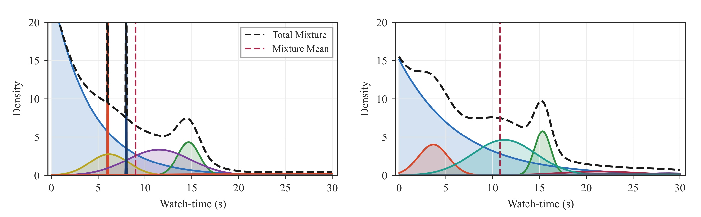
Figure 2 的左图不只是“曲线更尖”：多个高斯成分缩成几乎竖直的针，总密度黑色虚线因此出现与底层行为峰形不相称的局部极值。右图中 HEGM 的高斯峰保持可见宽度，并且分散在约 4、11 和 15 秒附近；红色虚线表示混合期望，它与单个峰值不同。这张图支撑的是“优化形状更稳定”而非“每个峰都对应某个可识别用户意图”；后一种因果语义并未被实验验证。
第二类问题是成分冗余与失活。多个高斯可能聚到相似均值和方差，实际上只剩一个模态；或者除一两个高斯外，其余权重趋近零；更极端时，指数权重接近 1，模型退化为纯指数分布。所以增大 (K) 并不自动增大有效容量，诊断时必须同时查看组件权重、均值间距和低方差比例，不能只依据配置中的组件数。这一点直接关系到模型复杂度是否真的转化为表达能力。第三类问题是上述失效已经伤到业务目标：论文的工业复现中，基础 EGMN 的 XAUC 只有 0.6585，低于简单 MSE-VR 的 0.7070，且对初始化敏感。
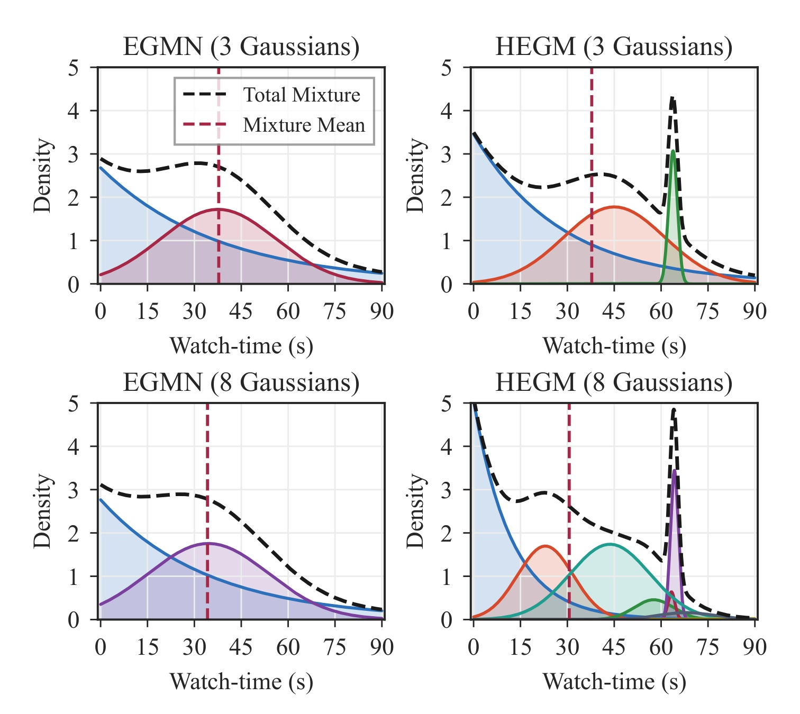
Figure 3 把“标称容量”与“有效容量”的差别摆在了同一坐标系。左列 EGMN 从 3 个高斯增加到 8 个后，总密度仍主要是一个宽峰与指数尾的叠加，额外组件没有形成清晰的新模态。右列 HEGM 在 3 与 8 个高斯下都保留分离峰，最右侧窄峰与红色视频时长线对齐，作者将其解读为完播模式。每行的红色实线表示视频时长，红色虚线表示混合分布的期望；两条参考线不能与任一高斯分量的均值混为一谈。尤其是 (K=8) 只增加了可用容量，图上分离出的峰数仍由样本上下文和权重共同决定，不能按组件编号预先贴行为标签。图中只是固定上下文下的密度形状定性案例；它可以说明 HEGM 更能使用多个成分，不能单独证明每个成分对真实行为机制的唯一对应，也不能说明所有样本都会出现相同数量的有效峰。
2. 方法
2.1 EGMN 的平铺混合、期望与似然陷阱
设共享骨干将用户-视频-上下文特征 (x) 编码为 (h=g_{\mathrm{backbone}}(x))。EGMN 在同一个 softmax 中放置一个指数成分与 (K) 个高斯成分。也就是说，指数头不仅与 watch 总分支竞争，还与每个高斯逐一竞争；当某一类 logit 早期占优时，其余组件得到的责任和梯度会一起变小，这正是后文层次化权重分解要改变的优化耦合：
符号解释：(w_0) 是指数成分权重，(w_k) 是第 (k) 个高斯权重；(\lambda>0) 是指数率，(\mu_k) 与 (\sigma_k>0) 分别是高斯均值和标准差。指数成分和高斯成分的密度为
符号解释：快速跳过由支持集在非负实数上的指数分布近似，参与观看由多个高斯描述。数学上的风险也在这个高斯密度分母中：当 (\sigma^2\to0) 且 (\mu\to y_i) 时，单点密度可被推得极高，形成最大似然的退化解。
分布头不改变排序主干的接口，因为条件期望有闭式。它把完整密度压缩成单个标量供原排序链路使用，同时保留 CDF 供阈值任务查询；因此“训练分布、按期望排序”与“在线额外采样”是两件不同的事，本文方案不需要后者。期望中的各项还保留了混合权重的贡献，所以它不是简单选取最大权重组件的均值：
符号解释：第一项是指数分支的加权均值，第二项是高斯均值的加权和。推理时它可直接成为排序分数，无需采样或自回归解码。同一个 CDF 还能给出 (1-F_{\theta}(\tau\mid x)) 和 (1-F_{\theta}(\rho d_v\mid x))，分别用于绝对秒数阈值和视频时长比例阈值。
EGMN 还把每个高斯均值强制推到指数均值右侧。这个约束意在制造 skip/watch 的顺序关系，却把一个分支的尺度误差变成所有 watch 均值共享的平移误差：只要指数率估计偏小、指数均值变大，高斯可到达的最小位置就会被整体抬高，即使数据本身需要某个 watch 模态靠近零也无法自由回调。其参数化写成：
符号解释：(\lambda^{-1}) 是指数均值，softplus 项为正，因此所有高斯均值都被限制在其右侧。它想把“快速跳过”与“参与观看”分开，但也把指数参数误差传递给了所有高斯位置。其训练目标为
符号解释：(L_{\mathrm{ent}}) 为混合权重熵项，(L_{\mathrm{reg}}) 是 MAE 点回归项，两个 (\lambda) 是权重。熵项希望多个成分都被使用，却不直接限制方差，因而不能阻断针尖。论文没有报告比如 log-sum-exp 的具体实现细节；因此这里所说的“数值稳定”特指通过参数结构、初始化和方差先验避免退化密度，不外推为代码层所有浮点路径都已被证明稳定。
2.2 层次 skip-watch 分解
HEGM 不再让指数成分与每个高斯在一个 (K+1) 类 softmax 中直接竞争，而是先作“跳过还是参与观看”的二级决策，再在 watch 分支内分配 (K) 个高斯。具体地，sigmoid 门 (p_{\mathrm{skip}}(x)) 将共享隐表示映射为快速跳过概率，而高斯内部权重只在条件于非跳过的分支上归一化：
符号解释：(p_{\mathrm{skip}}) 是顶层门，(1-p_{\mathrm{skip}}) 是进入参与观看分支的概率，(w_k) 只分配 watch 分支内部的责任。与 EGMN 的本质区别不是“指数+高斯”这个分布家族变了，而是权重分解从平铺竞争变成了层次条件化。训练和推理使用同一个密度式；线上配置可直接替换原看时长头，不需要改检索或特征生成。
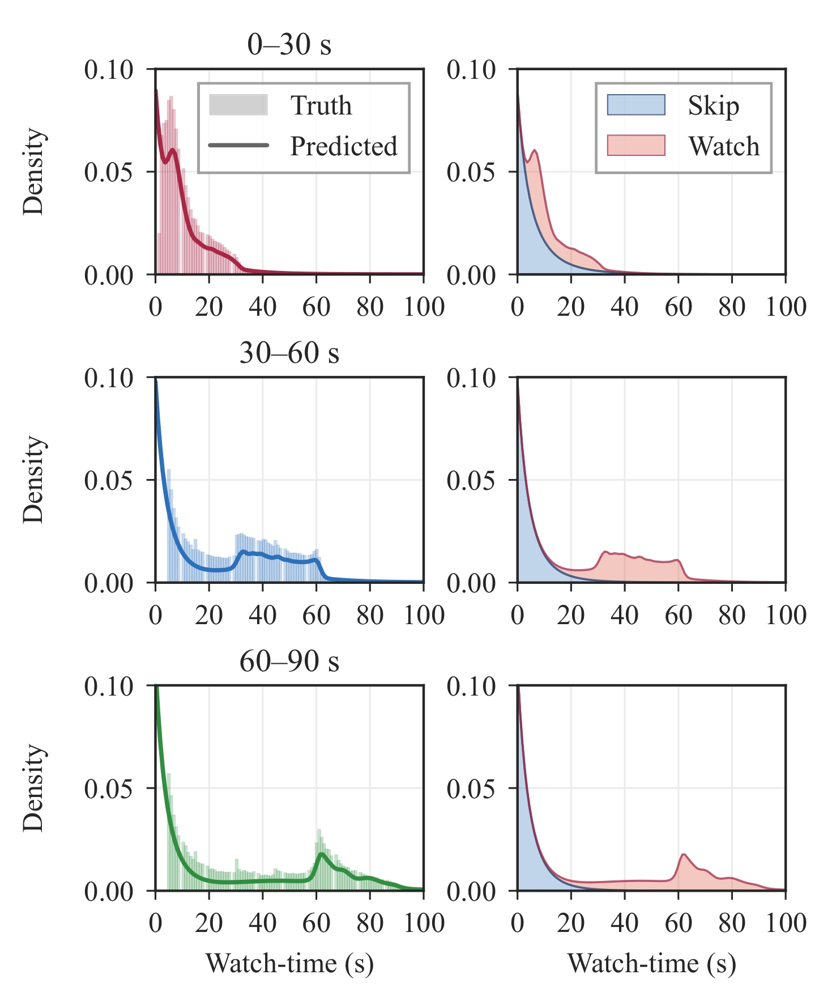
Figure 4 的左列是 0-30、30-60 和 60-90 秒三个视频时长桶内的真实直方图与预测总密度，右列则把同一预测拆成蓝色 skip 与红色 watch 两部分。较短视频桶的 watch 质量主要集中在前 30 秒；随视频时长上移，watch 分支在 30-60 或 60 秒附近出现额外质量，skip 分支仍贴近零。右列两条加权分支在同一横轴上相加才得到左列的总密度，因此蓝、红曲线并非两个单独训练的二分类标签头。这个可视化说明顶层门的行为分工不是用一个固定秒数硬切，而是随上下文预测两类成分的权重；图中的视频时长桶只用于聚合展示，也不等于将连续标签离散化后训练。图中展示的是分组平均密度，不代表每个单样本都有同样平滑的形状。
2.3 全局归一化、结构化初始化与参数化简化
论文先用数据集级常数 (s) 做 (y=y_{\mathrm{raw}}/s)，而不是按用户、物品或时长桶分别归一化。这样一方面把不同数据集的数值范围压到相似尺度，另一方面保留跨样本的绝对排序信息。然后不是把高斯均值随机挤在一起，而是在归一化支持集上均匀摆开：
符号解释：(\mu_k^{(0)}) 是第 (k) 个高斯的初始均值，(\sigma_k^{(0)}) 随组件数增大而收窄，但初期不至于变成针尖；(\lambda^{(0)}) 对应归一化时长均值 0.05，在工业尺度上约为 9 秒的短观看先验。初始化只约束优化起点，训练后的均值仍由数据学得；它的价值是避免多个成分在最初几轮就合并并永久失去分工。
HEGM 同时删除两个 EGMN 设计。第一，高斯均值不再强制加上 (1/\lambda)，因此参与观看成分可在数据支持集上自由移动，不被指数头的误差整体拖动。第二，删除混合权重熵正则；论文的经验结果表明它并未改善性能，平摊权重也不等于学到有意义的分布形状。这两个变化和层次门、结构化初始化共同构成 HEGM；不能把 HEGM 简写成“给 EGMN 加了 KL”。
2.4 按视频时长分桶的 KL 方差正则
当 (K) 较大时，只靠层次结构与初始化仍可能出现方差塌缩。作者将归一化视频时长范围分成 (M=18) 个等宽桶，在训练数据上估计每个桶的观看时长经验方差 (\bar\sigma_b^2)，再对每个样本、每个高斯成分施加均值匹配的 KL 惩罚：
符号解释：(b(i)) 是第 (i) 个视频所属时长桶，(\bar\sigma_{b(i)}^2) 是该桶真实时长方差，(\sigma_{k,\theta}^2(x_i)) 是模型给该样本第 (k) 个高斯的预测方差。两个高斯在 KL 中使用相同均值 (\mu_k)，因此惩罚只锦定方差尺度，不会把不同成分的均值拉到一起。比值太小时 (-\log) 项迅速增大，因而抵消似然对 (\sigma\to0) 的诱惑；比值太大时线性项又惩罚过度弥散。按时长分桶而非使用单一全局方差，是为了允许长视频对应更大的合理波动。
把三项合起来，最终训练目标同时约束样本处密度、用于排序的点估计以及高斯方差尺度。三个目标的权重需要在验证集上选择，不能仅因加入 KL 后训练曲线更平滑，就假定它必然提高 XAUC 或点误差；论文的小 (K) 结果恰好展示了这种稳定性与预测指标并不完全同向。目标写为
符号解释：(L_{\mathrm{NLL}}) 拟合完整密度，(L_{\mathrm{reg}}) 保留点预测约束，(L_{\mathrm{KL}}) 在需要时稳定方差。与 EGMN 相比，权重熵被移除，方差 KL 成为可选项。这个“可选”很关键：论文上线的 (K=3) 配置中 (\lambda_{\mathrm{KL}}=0)，因为小混合未观察到塌缩；KL 主要用于组件较多时的过参数化稳定，不是线上增益的单独证明来源。
3. 实验结果
3.1 数据、骨干与评估口径
实验包含两个公开数据集与一个私有工业数据集。KuaiRec 有 7,176 个用户、10,728 个视频和 12,530,806 次互动，用 60 秒的 99 分位数做全局归一化，按互动时序分为 80%/10%/10%。VK-LSVD 使用 100,000 个用户、171,106 个视频和 38,404,921 次互动的子集，归一化常数为 157 秒的 99 分位数，分别用 5/1/1 周做训练、验证和测试。工业数据有 6,390,738 个用户、2,484,528 个视频和 282,443,525 次互动，以最大允许时长 180 秒归一化，切分为 5/1/1 天。三者都用时间切分避免前视偏差，不用随机切分。
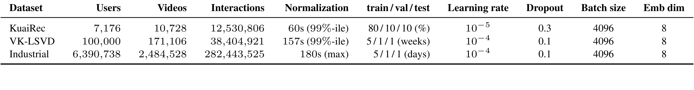
Table 1 还提醒我们，“三个数据集都验证”不意味着三组结果完全可以横向比数值。公开数据使用 PLE 编码数值特征、embedding 编码类别特征和 DCNv2 并行骨干；工业数据则接入包含宽侧 logits、用户表示和点击/点赞/分享/观看时长多任务塔的生产骨干。同一数据集内，所有候选预测头共用相同骨干，因而头部比较是公平的；但不同数据集的学习率、丢弃率、切分单位和骨干并不一致，所以不应把某个集的绝对 XAUC 高低解读为数据集难度排名。
离线基线包括 MSE-VR、MAE-VR、分类-还原框架 CREAD 和 EGMN。公开数据与工业数据都调节 (K\in{3,6,9,12})，KL 权重调节 0.05、0.1、0.5、1.0，点回归权重调节 0.5、1.0、2.0。检查点和超参数只根据验证 XAUC 选择，测试集不参与选择；除特别说明外，结果为三个随机种子均值。
3.2 公开与工业离线主结果
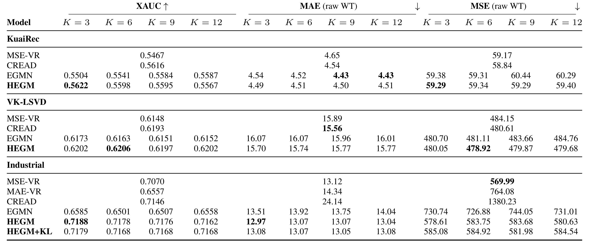
Table 2 的第一个重点是区分“指标绝对值”与“相对于基线的改变”。KuaiRec 上 HEGM (K=3) 的 XAUC 是 0.5622，比 EGMN 最好的 0.5587 高 0.0035 个绝对单位，但 MAE 4.49 高于 EGMN 最好的 4.43，MSE 59.29 也高于 CREAD 的 58.84。因此该数据集支持“排序更好”，不支持“所有点误差都最好”。VK-LSVD 上 HEGM (K=6) 的 XAUC 0.6206 比 EGMN 最好的 0.6173 高 0.0033；其 MSE 478.92 是表中最低，而 MAE 15.74 仍高于 CREAD 的 15.56。论文正文对公开数据 MSE 的概括比较强，精读时应以表中逐格数值为准。
工业数据的差距更大：HEGM (K=3) 的 XAUC 为 0.7188，相对 EGMN (K=3) 的 0.6585 是 +0.0603 的绝对差，若以 EGMN 为分母才算成约 9.16% 的相对增幅；相对 MSE-VR 的 0.7070 则是 +0.0118 的绝对差。HEGM 的 MAE 12.97 低于 EGMN 的 13.51 和 MSE-VR 的 13.12，但它的 MSE 578.61 高于直接优化 MSE 的 MSE-VR 569.99，绝对劣化 8.62。这是一个很典型的多目标取舍：分布头的主要收益体现在排序和阈值事件，不是对所有均方误差目标的统治。HEGM+KL (K=3) 的 XAUC 0.7179 略低于无 KL 的 0.7188，也表明 KL 不应被当成默认一定提分的通用附加项。
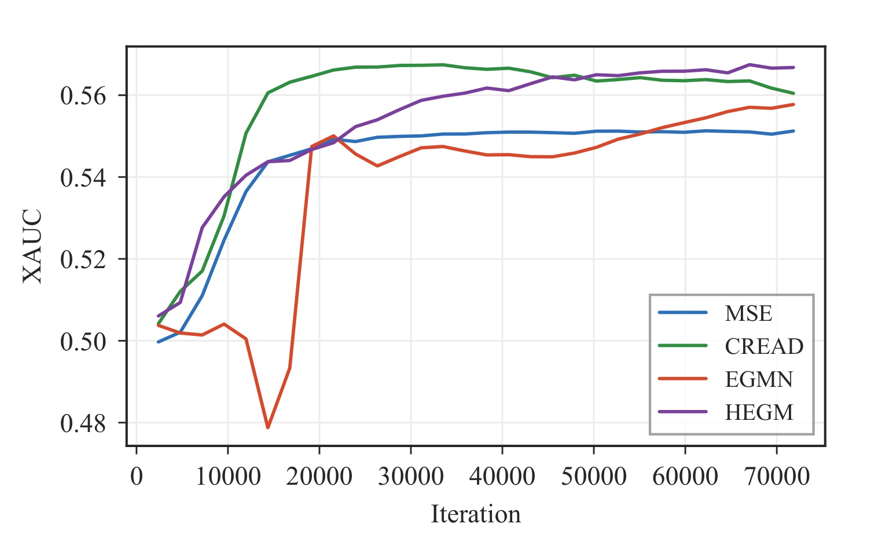
Figure 5 把混合密度头的训练时间问题显示得很清楚。CREAD 绿线在前期快速到达高位，但论文报告其 XAUC 从第 10 轮的 0.5616 降到第 30 轮的 0.5558；HEGM 紫线则在约 20 轮以后才超过 CREAD，从第 10 轮 0.5484、第 20 轮 0.5591 继续到第 30 轮峰值 0.5622。图中的 EGMN 橙线还在约 1.5 万步附近出现一次显著下探，和前文“平铺混合对优化状态敏感”的诊断方向一致；但它只是一条训练轨迹，不能用来估计失效概率。原因并非 HEGM 推理需要逐步解码，而是训练时要同时定位成分均值、方差和权重，并让它们诱导的期望排序稳定。工程上如果沿用点回归头的短早停窗口，可能在混合结构还未分工前就停止训练，从而错判方法上限。
3.3 阈值事件：同一分布头的第二类收益
对于绝对阈值 “观看超过 (\tau) 秒”，分布头直接使用 (1-F_{\theta}(\tau\mid x))；对于相对阈值 “观看超过视频时长的 (\rho)”，使用 (1-F_{\theta}(\rho d_v\mid x))。点回归基线则直接用预测时长作二分类分数。所有方法都没有为这些阈值额外微调或增加新头，所以这项实验真正测的是原预测对条件尾概率的支持能力。
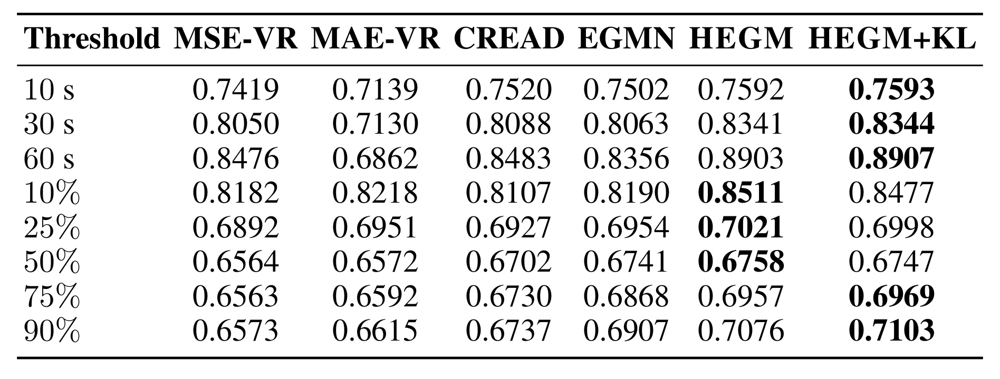
Table 3 显示，绝对深度观看中的差距随阈值增大而更明显。60 秒阈值上，HEGM 的 ROC AUC 是 0.8903，HEGM+KL 是 0.8907，EGMN 是 0.8356；因此 HEGM+KL 对 EGMN 是 +0.0551 的绝对 AUC 差，不是“相对提升 5.51%”。在相对阈值上，无 KL 的 HEGM 于 10%、25%、50% 三行最高，HEGM+KL 则在 75% 与 90% 最高：例如 10% 阈值是 0.8511 对 0.8477，而 90% 阈值反过来是 0.7076 对 0.7103。两者差距很小，不应概括成 KL 对所有阈值事件都一致更好。更合理的解读是，完整分布让同一预测头支持多个业务阈值，方差正则在部分深尾事件上有轻微优势；表中比较的是排序型 ROC AUC，并不等价于这些尾概率已经完成概率校准。
3.4 消融与塌缩：结构修复和 KL 是两个层次
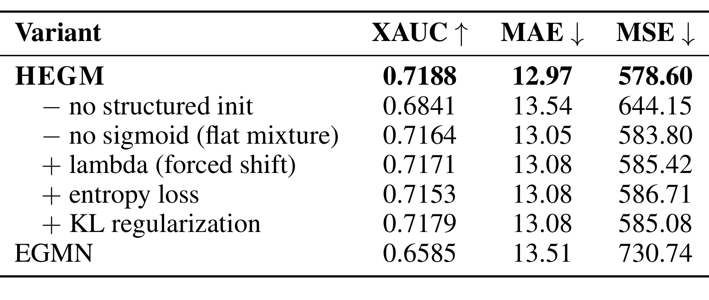
Table 4 给出了本文最能区分各个修复作用的证据。完整 HEGM 的 XAUC 是 0.7188；去掉结构化初始化后降到 0.6841，绝对下降 0.0347，同时 MAE 从 12.97 变为 13.54、MSE 从 578.60 变为 644.15，是影响最大的单项。去掉 sigmoid 层次门、恢复平铺混合时 XAUC 为 0.7164；恢复强制均值平移为 0.7171，恢复熵正则为 0.7153，三者都劣于完整 HEGM。在 (K=3) 上加 KL 变为 0.7179，反而比无 KL 低 0.0009。所以线上使用的小混合主要依靠层次结构和初始化，KL 的作用要到较大 (K) 才显著。这是变体比较，它支持每项设计的相对贡献，但还不是对所有可能交互效应的完全因子实验。
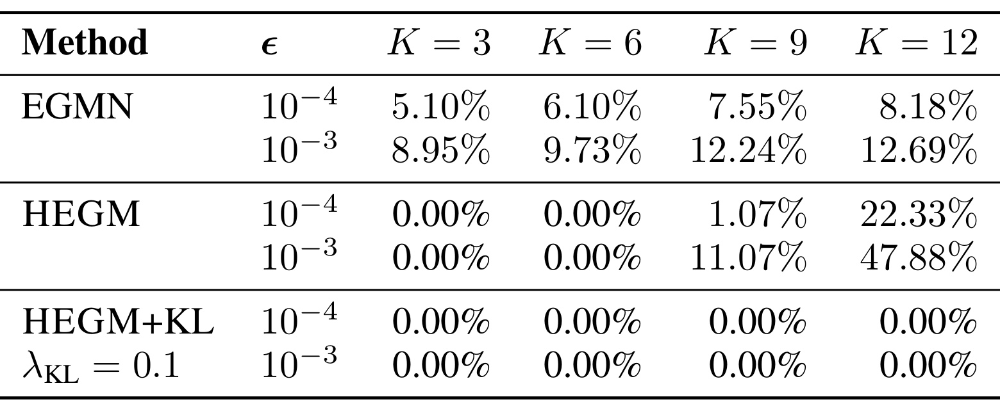
Table 5 把“是否塌缩”定义为预测高斯标准差小于阈值 (\epsilon)。EGMN 在 (\epsilon=10^{-3}) 时，(K=3,6,9,12) 的塌缩率依次为 8.95%、9.73%、12.24%、12.69%。无 KL 的 HEGM 在 (K=3,6) 时两个阈值下都是 0%，证明结构与初始化本身已解决小混合的主要失效；但它在 (K=12,\epsilon=10^{-3}) 时高达 47.88%，比 EGMN 的 12.69% 更糟；即使使用更严格的 (10^{-4}) 阈值，无 KL 的 (K=12) 也达到 22.33%。HEGM+KL 则在表内所有 (K) 和两个阈值下都为 0%。两个阈值同时报告很重要，因为它排除了结论只由某一个任意 cutoff 驱动的误读。因此“HEGM 解决方差塌缩”必须带条件：小 (K) 时结构修复足够，大 (K) 时要靠 KL 方差先验才得到表中的全零塌缩率。
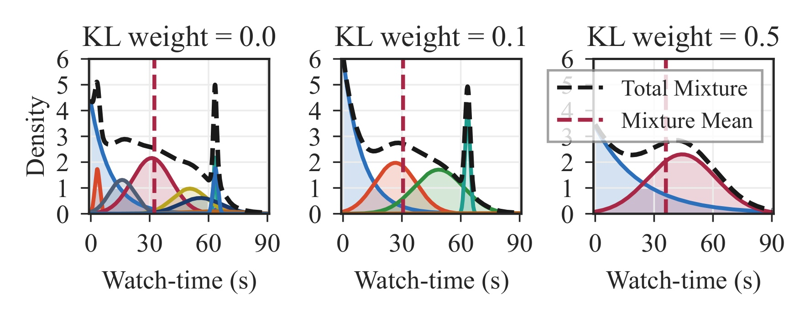
Figure 7 给出了对应的形状证据。当 (\lambda_{\mathrm{KL}}=0) 时，多个组件在不同时长处形成极窄针尖，总密度也随之出现局部突起。权重增到 0.1 后，约 30 秒的中间模态变宽，60 秒附近的峰仍在，却不再是近似δ函数的针；权重 0.5 时分布进一步平滑，部分细粒度模态被合并。每个面板的黑线是各加权成分相加后的总密度，红色虚线是该分布的期望；比较时应看同一上下文下方差形状如何变化，而不是把期望线位移当成唯一效果。这也说明 KL 权重存在偏差-稳定性取舍：太小不足以阻止针尖，太大可能过度平滑。论文的离线表主要比较 0.1，图中 0.5 更适合用来观察趋势，不是默认推荐配置；Figure 7 提供的是定性机制证据，定量塌缩率仍以 Table 5 为准。
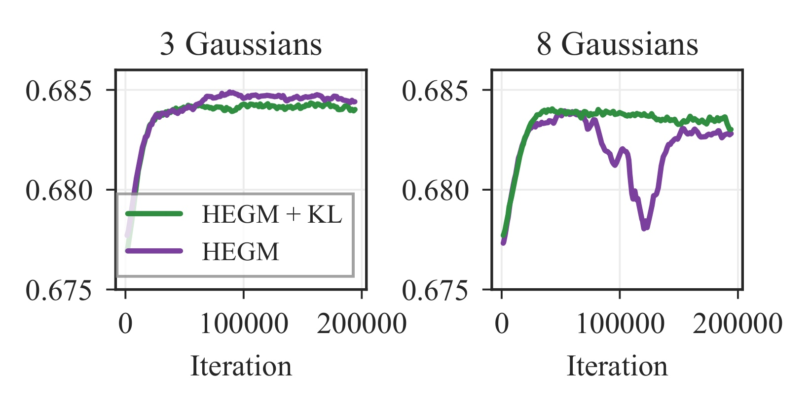
Figure 8 把稳定性与组件数联系起来。左图 (K=3) 时，有 KL 的绿线和无 KL 的紫线快速收敛到约 0.684，后半程只有很小差别；右图 (K=8) 时，无 KL 的紫线在约 10 万次迭代后出现明显下探和多次波动，末段大致从 0.683 一带滑向 0.678 左右，有 KL 的绿线则保持更平稳的平台。曲线说明的是优化过程中 XAUC 与方差退化的伴随变化，并没有单独隔离随机种子或学习率造成的波动。因此 KL 正则的价值不应只看最终 XAUC，还包括降低训练中方差退化对排序指标的冲击。同时，工业主结果表明 (K=3) 已足够，而图中的 (K=8) 是稳定性示例、并非主结果网格的最优配置；所以“用更多成分再靠更强正则救回来”并不自动比稀疏小混合更合算。
3.5 约 1.5 个月线上 A/B 与生产代价
线上实验将 HEGM 作为生产多任务排序系统中原有观看时长头的直接替代，检索和特征生成保持不变。部署配置为 (K=3,\lambda_{\mathrm{reg}}=1.0,\lambda_{\mathrm{KL}}=0)，因为该稀疏配置中没有观察到塌缩。用户级随机 A/B 持续约 1.5 个月：第一个月为正向实验，随后两周交换处理和对照分配做反向实验。处理组与生产基线组各承接 5% 流量，每组每天约 1100 万请求。论文报告正反向阶段的效应符号和幅度一致，用 CUPED 方差缩减后的用户级 t 检验评估统计显著性；表中所有指标都满足 (p<0.05)，但是否超过预设业务阈值是另一个标准。
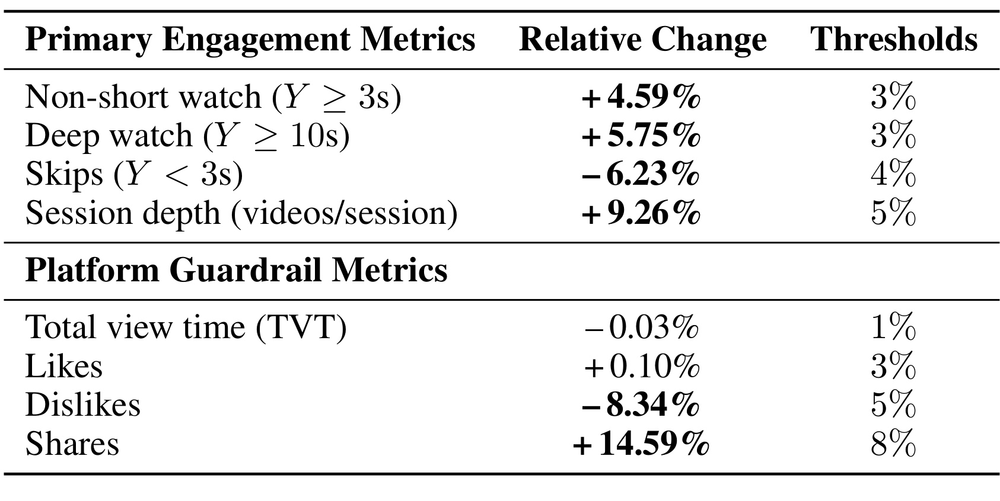
Table 6 的百分数全部是 相对于生产基线的平均相对变化，不是百分点。正向 A/B 中，不短看相对 +4.59%、深度观看 +5.75%、快速跳过 -6.23%、每会话视频数 +9.26%，这四项均超过表内 3%/3%/4%/5% 的业务阈值。每会话视频数还报告了绝对值从 28.52 变到 31.16，即 +2.64 个视频/会话；+9.26% 是由此得到的相对幅度。护栏中总观看时长 -0.03% 和点赞 +0.10% 虽统计显著，却未超过 1% 和 3% 业务阈值；不喜欢 -8.34% 和分享 +14.59% 则超过 5% 和 8% 阈值。因此证据更像“减少立即跳过、增加会话内有效观看事件”，不是“总消费时长同比增加”，也不能从点赞几乎不变推出所有显式偏好都上升。
线上训练报告使用 4 张 NVIDIA H100 80GB GPU，单次约 8 小时，但全部实验累计 GPU 小时没有跟踪。服务端使用 48 张 NVIDIA RTX 6000 Pro 96GB GPU，PyTorch 2.9/CUDA 12.3 训练后以 TensorRT 格式部署。资源指标按 10 亿次生产请求统计。
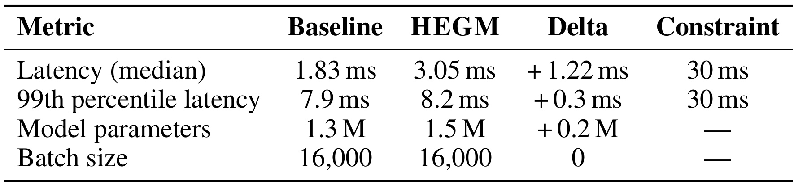
Table 7 报告的延迟 Delta 是绝对毫秒差：中位延迟从 1.83 ms 到 3.05 ms，绝对 +1.22 ms，若换算才是约 +66.7% 的相对增幅；p99 从 7.9 ms 到 8.2 ms，绝对 +0.3 ms，约 +3.8% 相对增幅。两者都低于表中 30 ms 服务约束，但这不表示中位延迟的相对成本可忽略。参数量从 1.3M 到 1.5M，绝对 +0.2M，约 +15.4% 相对增幅；批量均为 16,000。中位数相对增加较大、尾延迟只小幅增加，是这套请求分布下的描述性结果；表格没有给出算子级剖析，不能据此断言额外成本一定集中在固定开销。线上结果因而是一个有边界的工程结论：在该平台、该硬件和 30 ms 约束下，增加的头部成本可被接受；不能由此断言其他规模、批量或硬件上都保持相同余量。
4. 总结
4.1 如何准确区分 EGMN 与 HEGM
EGMN 和 HEGM 使用的分布“原料”相同：都有一个近零快速跳过的指数成分与多个参与观看的高斯成分，都能用闭式期望做排序，也能从 CDF 导出阈值概率。区别在结构与优化：EGMN 用平铺 (K+1) 类 softmax，强制高斯均值位于指数均值右侧，并加权重熵正则；HEGM 先用 sigmoid 区分 skip/watch，再在 watch 内混合高斯，用全局归一化与分散初始值防止早期合并，删除强制平移和熵项，并在大 (K) 时可选加入时长分桶的 KL 方差先验。把 HEGM 简化成“EGMN+KL”会错过层次门和初始化这两个在 (K=3) 上更重要的改动。
4.2 证据强度与工程启发
这项工作的证据链较完整：两个公开数据检查方法是否只在私有系统有效，2.824 亿互动的工业数据与固定生产骨干检查替换头的实际排序能力，消融和塌缩率把“为什么更稳定”落到可检查参数上，约 1.5 个月用户级随机、正向-反向 A/B 则补上线上环节。工程上最可迁移的不是某个固定 (K) 或某个绝对增益，而是三条检查原则：将快速跳过与参与观看的责任分开；将初始成分主动摆开并监控低方差比例；按排序、点误差、阈值事件与延迟分开验收，不用单一 NLL 或 MSE 代替全部目标。
4.3 局限与后续跟进
局限至少有六项。第一，工业数据、生产骨干和在线基线是私有的，公开数据使用的又是不同骨干与运行条件，无法假设线上增益会原样迁移到其他内容流。第二，线上对照是专有生产观看时长头，不是 EGMN；所以 A/B 可以证明 HEGM 替换该基线时的效果，不能被改写成“线上证明 HEGM 胜过 EGMN”。第三，线上替换捆绑了层次门、初始化、参数化等整套改动，不能将 +9.26% 会话深度因果归给其中一项。第四，论文明确指出 HEGM 不是因果去偏方法，时长偏差与曝光选择问题仍需其他机制处理。第五，高斯本身对全实数有质量，与非负且可能受视频时长约束的真实支持集不完全一致，作者也将替代成分家族列为后续方向。第六，NLL 因塌缩不适合直接做主选择指标，论文尚未对概率校准、sharpness 和更完整的概率评分做系统评估。另外，混合成分更清晰只能证明更易检查，不能自动赋予“用户意图”的因果语义。
后续值得做四组检验。一是使用官方仓库公开切分和检查点，逐个复现 KuaiRec/VK-LSVD 的 (K=3,6,9,12) 结果，特别核对 Table 2 中 KuaiRec MSE 的文字概括与表格数值差异。二是在多随机种子上记录每个成分的权重、均值、方差和梯度，将最终塌缩率扩展为整个训练过程的失效仪表盘。三是增加连续概率校准、尾部覆盖和分桶阈值可靠性评估，检查“无塌缩”是否真的带来可用的概率。四是在不变的业务链路中分别比较层次门、结构化初始化和大 (K)+KL，并将短期参与指标与更长期留存、内容多样性和公平性护栏一起观测。